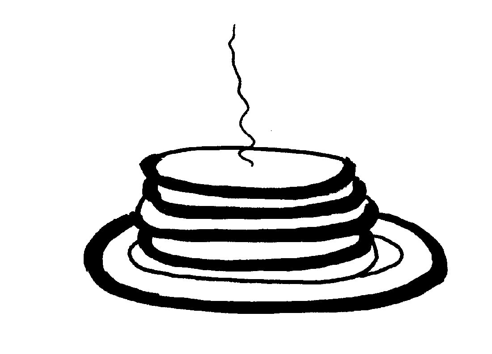

Banana Bread
Biscuits
Bishop's Bread
Blueberry Coffee Cake
Buttermilk Hotcakes
Chippewa Fried Bread
Cornmeal Mush
Crunchy Gradnola
Dutch Babies
Funnel Cakes
Gingerbread Scones
Northern Sweet Cornbread
Pumpkin Nut Bread
Sour-Cream Coffee Cake
Tea Scones
Waffles
A World of Breads, Dolores Casella

3 1/2 cups flour
1 teaspoon salt
2 teaspoons soda
2 tablespoons sugar
5 large eggs
1 quart buttermilk or sour milk
1/4 cup melted butter
1/2 cup wheat germ
Mix the dry ingredients, add the eggs, buttermilk, and melted butter to the dry ingredients, and stir in the wheat germ last. Bake on a lightly buttered hot griddle.
Other flours may be substituted for the wheat germ, or left out entirely. Crumbled bacon, about 1 cup blueberries or other chopped fruit, sliced hotdogs, minced onions, or oysters may be added by choice.